CODING AGENTS AS PIXEL WORLD MODELS
traex/DeepSeek-V4.1-Flash · dynamic_spatial_relationship_0012
点击播放 · 原生 RGB 像素
逐轮保存的候选
回放视频、检查图与代码变化。
每份候选均可单独播放。实际图片检查记录在下方工具轨迹中。
候选 01播放与检查图
点击播放 · 原生 RGB 像素
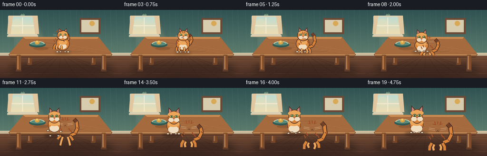
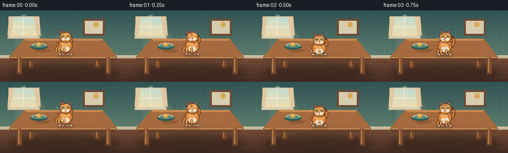
展开代码变化
--- 上一保存版本
+++ 本次保存版本
@@ -0,0 +1,402 @@
+from __future__ import annotations
+
+import math
+from pathlib import Path
+
+import numpy as np
+from PIL import Image, ImageDraw, ImageFilter
+
+from artifact_io import save
+
+
+W, H = 256, 144
+SS = 4
+W2, H2 = W * SS, H * SS
+CASE_DIR = Path(__file__).resolve().parent
+
+
+def p(value: float) -> int:
+ return int(round(value * SS))
+
+
+def box(x0, y0, x1, y1):
+ return (p(x0), p(y0), p(x1), p(y1))
+
+
+def rgba(hex_color: str, alpha: int = 255):
+ value = hex_color.lstrip("#")
+ return tuple(int(value[i : i + 2], 16) for i in (0, 2, 4)) + (alpha,)
+
+
+def gradient(size, top, bottom):
+ width, height = size
+ top_arr = np.array(top, dtype=np.float32)
+ bottom_arr = np.array(bottom, dtype=np.float32)
+ weights = np.linspace(0.0, 1.0, height, dtype=np.float32)[:, None, None]
+ rows = top_arr[None, None, :] * (1.0 - weights) + bottom_arr[None, None, :] * weights
+ pixels = np.repeat(rows, width, axis=1)
+ return Image.fromarray(np.clip(pixels, 0, 255).astype(np.uint8), "RGB")
+
+
+def add_grain(image, amount=3.0, seed=4):
+ rng = np.random.default_rng(seed)
+ arr = np.asarray(image).astype(np.int16)
+ noise = rng.normal(0.0, amount, (arr.shape[0], arr.shape[1], 1)).round().astype(np.int16)
+ arr = np.clip(arr + noise, 0, 255).astype(np.uint8)
+ return Image.fromarray(arr, "RGB")
+
+
+def draw_background():
+ wall = gradient((W2, p(101)), (48, 83, 83), (96, 128, 112))
+ floor = gradient((W2, H2 - p(96)), (116, 76, 53), (66, 42, 34))
+ image = Image.new("RGB", (W2, H2))
+ image.paste(wall, (0, 0))
+ image.paste(floor, (0, p(96)))
+ draw = ImageDraw.Draw(image, "RGBA")
+
+ # Broad, soft window light across the back wall.
+ light = Image.new("RGBA", (W2, H2), (0, 0, 0, 0))
+ ld = ImageDraw.Draw(light, "RGBA")
+ ld.polygon([(p(21), p(13)), (p(77), p(16)), (p(112), p(101)), (p(34), p(101))], fill=(255, 229, 174, 24))
+ ld.polygon([(p(33), p(20)), (p(61), p(21)), (p(82), p(99)), (p(42), p(99))], fill=(255, 240, 201, 16))
+ light = light.filter(ImageFilter.GaussianBlur(p(4)))
+ image = Image.alpha_composite(image.convert("RGBA"), light).convert("RGB")
+ draw = ImageDraw.Draw(image, "RGBA")
+
+ # Subtle wallpaper striae keep the large wall from reading as a flat fill.
+ rng = np.random.default_rng(12)
+ for x in range(p(4), W2, p(12)):
+ alpha = int(rng.integers(6, 14))
+ draw.line((x, 0, x + p(3), p(96)), fill=(213, 231, 207, alpha), width=p(1))
+ for _ in range(46):
+ x = int(rng.integers(0, W2))
+ y = int(rng.integers(0, p(91)))
+ length = int(rng.integers(p(8), p(32)))
+ draw.line((x, y, x + p(2), min(p(94), y + length)), fill=(20, 55, 55, 8), width=p(1))
+
+ # Window, curtain, and a clean sill.
+ draw.rounded_rectangle(box(17, 12, 78, 55), radius=p(2), fill=rgba("#D9D2B7"))
+ draw.rounded_rectangle(box(20, 15, 75, 51), radius=p(1), fill=rgba("#B6D3CE"))
+ sky = gradient((p(55), p(36)), (191, 220, 209), (239, 221, 177))
+ image.paste(sky, (p(20), p(15)))
+ draw = ImageDraw.Draw(image, "RGBA")
+ draw.ellipse(box(26, 18, 46, 38), fill=(238, 226, 183, 90))
+ draw.line((p(47), p(16), p(47), p(50)), fill=rgba("#F4E9CE"), width=p(2))
+ draw.line((p(21), p(33), p(74), p(33)), fill=rgba("#F4E9CE"), width=p(2))
+ draw.polygon([(p(18), p(12)), (p(27), p(12)), (p(22), p(51)), (p(15), p(51))], fill=rgba("#E1C79F"))
+ draw.polygon([(p(68), p(12)), (p(79), p(12)), (p(82), p(51)), (p(74), p(51))], fill=rgba("#E1C79F"))
+ draw.rectangle(box(15, 53, 80, 57), fill=rgba("#CDBB99"))
+ draw.line((p(16), p(54), p(79), p(54)), fill=rgba("#F2E5CA"), width=p(1))
+
+ # A small framed landscape balances the composition without competing with the cat.
+ draw.rounded_rectangle(box(167, 17, 211, 51), radius=p(1), fill=rgba("#6B4A36"))
+ draw.rectangle(box(171, 21, 207, 47), fill=rgba("#D8CCAE"))
+ draw.ellipse(box(188, 23, 199, 34), fill=rgba("#D8A956"))
+ draw.polygon([(172, 42), (181, 31), (189, 38), (197, 29), (207, 42)], fill=rgba("#5F8171"))
+ draw.polygon([(172, 44), (184, 37), (196, 43), (207, 36), (207, 47), (172, 47)], fill=rgba("#789479"))
+
+ # Baseboard.
+ draw.rectangle(box(0, 91, 256, 97), fill=rgba("#C8B898"))
+ draw.line((0, p(91), W2, p(91)), fill=rgba("#E5D7B9"), width=p(1))
+ draw.line((0, p(97), W2, p(97)), fill=rgba("#725846"), width=p(1))
+
+ # Floorboards with perspective joints.
+ for y in (105, 118, 133):
+ draw.line((0, p(y), W2, p(y)), fill=(54, 32, 28, 72), width=p(1))
+ draw.line((0, p(y + 1), W2, p(y + 1)), fill=(190, 137, 91, 26), width=p(1))
+ vanishing = (p(128), p(92))
+ for x in (-24, 8, 45, 83, 122, 162, 204, 244, 280):
+ draw.line((p(x), H2, vanishing[0], vanishing[1]), fill=(51, 29, 25, 64), width=p(1))
+ for _ in range(22):
+ x0 = int(rng.integers(0, W2))
+ y0 = int(rng.integers(p(100), H2))
+ draw.line((x0, y0, x0 + int(rng.integers(p(12), p(46))), y0), fill=(225, 164, 108, 12), width=p(1))
+
+ # Soft floor shadow beneath the table.
+ table_shadow = Image.new("RGBA", (W2, H2), (0, 0, 0, 0))
+ td = ImageDraw.Draw(table_shadow, "RGBA")
+ td.ellipse(box(19, 109, 239, 139), fill=(34, 21, 20, 105))
+ table_shadow = table_shadow.filter(ImageFilter.GaussianBlur(p(7)))
+ image = Image.alpha_composite(image.convert("RGBA"), table_shadow).convert("RGB")
+ draw = ImageDraw.Draw(image, "RGBA")
+
+ # Back legs first.
+ for x0, x1 in ((57, 67), (191, 201)):
+ draw.rounded_rectangle(box(x0, 68, x1, 116), radius=p(2), fill=rgba("#734529"))
+ draw.rectangle(box(x0 + 2, 71, x0 + 5, 112), fill=rgba("#A56B3B"))
+ draw.line((p(x0 + 1), p(72), p(x0 + 1), p(113)), fill=rgba("#4C3026"), width=p(1))
+
+ # Tabletop, with a visible front thickness and warm grain.
+ draw.polygon([(p(49), p(57)), (p(207), p(57)), (p(236), p(94)), (p(18), p(94))], fill=rgba("#A56A3D"))
+ draw.polygon([(p(49), p(57)), (p(207), p(57)), (p(205), p(61)), (p(53), p(61))], fill=rgba("#C98A50"))
+ draw.polygon([(p(18), p(94)), (p(236), p(94)), (p(232), p(101)), (p(22), p(101))], fill=rgba("#70442B"))
+ draw.line((p(20), p(95), p(234), p(95)), fill=rgba("#D09960"), width=p(2))
+ draw.line((p(22), p(100), p(232), p(100)), fill=rgba("#4B3025"), width=p(1))
+ for offset in (-4, 0, 5, 10):
+ y0 = 63 + offset
+ draw.line((p(56 + offset * 2), p(y0), p(229 - offset), p(90 + offset * 0.3)), fill=(232, 166, 99, 44), width=p(1))
+ draw.line((p(55 + offset * 2), p(y0 + 1), p(229 - offset), p(91 + offset * 0.3)), fill=(87, 50, 31, 36), width=p(1))
+ for cx, cy, rx, ry in ((85, 77, 22, 4), (159, 86, 18, 3), (119, 68, 26, 3)):
+ draw.arc(box(cx - rx, cy - ry, cx + rx, cy + ry), 10, 168, fill=(76, 44, 29, 50), width=p(1))
+
+ # Front legs and small brass feet.
+ for x0, x1 in ((34, 44), (213, 223)):
+ draw.rounded_rectangle(box(x0, 95, x1, 129), radius=p(2), fill=rgba("#7E4C2D"))
+ draw.rectangle(box(x0 + 2, 97, x0 + 5, 125), fill=rgba("#B17845"))
+ draw.line((p(x0 + 1), p(98), p(x0 + 1), p(126)), fill=rgba("#503329"), width=p(1))
+ draw.rounded_rectangle(box(x0 - 1, 127, x1 + 1, 130), radius=p(1), fill=rgba("#5C3A29"))
+
+ # A small bowl on the left side gives the tabletop scale.
+ draw.ellipse(box(61, 68, 96, 79), fill=rgba("#2F5B55"))
+ draw.ellipse(box(64, 69, 93, 75), fill=rgba("#5A8A7A"))
+ draw.arc(box(63, 66, 94, 78), 182, 357, fill=rgba("#BFD4B6"), width=p(2))
+ draw.ellipse(box(73, 65, 83, 73), fill=rgba("#D8A345"))
+ draw.ellipse(box(75, 65, 80, 69), fill=rgba("#F0C66B"))
+ draw.ellipse(box(70, 78, 102, 85), fill=(70, 44, 28, 55))
+
+ image = add_grain(image, amount=2.0, seed=8)
+ return image
+
+
+def draw_cat(base: Image.Image, cx: float, foot_y: float, scale: float, pose: str, phase: float, blink=False):
+ layer = Image.new("RGBA", (W2, H2), (0, 0, 0, 0))
+ d = ImageDraw.Draw(layer, "RGBA")
+ s = scale
+ stride = math.sin(phase * math.tau)
+ bob = 0.0
+ if pose == "run":
+ bob = -1.25 * abs(stride) * s
+
+ if pose == "crouch":
+ body_cy = foot_y - 12.5 * s
+ head_cy = foot_y - 28.5 * s
+ body_rx, body_ry = 13.7 * s, 10.8 * s
+ elif pose == "jump":
+ body_cy = foot_y - 21.0 * s
+ head_cy = foot_y - 38.0 * s
+ body_rx, body_ry = 12.2 * s, 14.8 * s
+ else:
+ body_cy = foot_y - 17.0 * s + bob
+ head_cy = foot_y - 34.5 * s + bob
+ body_rx, body_ry = 13.2 * s, 13.3 * s
+
+ head_cx = cx + (0.9 * s if pose == "run" else 0.0)
+ outline = rgba("#4A3026")
+ fur = rgba("#D78239")
+ fur_light = rgba("#ECA65A")
+ cream = rgba("#F0DDC0")
+ stripe = rgba("#9D4E2A")
+
+ def line(points, fill, width):
+ d.line([(p(x), p(y)) for x, y in points], fill=fill, width=p(width), joint="curve")
+
+ # Tail behind the body.
+ tail_swing = math.sin(phase * math.tau + 0.8) * 2.8 * s
+ tail = [
+ (cx + 9.5 * s, body_cy + 5.0 * s),
+ (cx + 17.0 * s, body_cy + 2.0 * s),
+ (cx + 21.5 * s, body_cy - 7.0 * s),
+ (cx + 20.0 * s, body_cy - 16.0 * s + tail_swing),
+ (cx + 15.5 * s, body_cy - 21.0 * s + tail_swing),
+ ]
+ line(tail, outline, 6.8 * s)
+ line(tail, fur, 4.5 * s)
+ line(tail[-2:], rgba("#744127"), 4.7 * s)
+ for tx, ty in tail[1:3]:
+ line([(tx - 1.0 * s, ty - 1.5 * s), (tx + 1.5 * s, ty + 0.5 * s)], rgba("#8B4527"), 1.2 * s)
+
+ # Hind legs.
+ if pose == "jump":
+ hind_feet = [
+ (cx - 13.5 * s, foot_y - 9.0 * s),
+ (cx + 13.5 * s, foot_y - 7.0 * s),
+ ]
+ elif pose == "crouch":
+ hind_feet = [(cx - 12.5 * s, foot_y), (cx + 12.5 * s, foot_y)]
+ else:
+ hind_feet = [
+ (cx - 11.5 * s, foot_y - max(0.0, stride) * 3.0 * s),
+ (cx + 11.5 * s, foot_y - max(0.0, -stride) * 3.0 * s),
+ ]
+ for side, (fx, fy) in zip((-1, 1), hind_feet):
+ hip = (cx + side * 8.0 * s, body_cy + 6.0 * s)
+ knee = (cx + side * 11.3 * s, (hip[1] + fy) * 0.5)
+ line([hip, knee, (fx, fy)], outline, 5.8 * s)
+ line([hip, knee, (fx, fy)], fur, 3.8 * s)
+ d.ellipse(box(fx / s - 3.0, fy / s - 1.8, fx / s + 3.0, fy / s + 1.8), fill=outline)
+ d.ellipse(box(fx / s - 2.2, fy / s - 1.1, fx / s + 2.2, fy / s + 1.1), fill=cream)
+
+ # Body and chest.
+ d.ellipse(box(cx / s - body_rx / s - 1.0, body_cy / s - body_ry / s - 1.0,
+ cx / s + body_rx / s + 1.0, body_cy / s + body_ry / s + 1.0), fill=outline)
+ d.ellipse(box(cx / s - body_rx / s, body_cy / s - body_ry / s,
+ cx / s + body_rx / s, body_cy / s + body_ry / s), fill=fur)
+ d.ellipse(box(cx / s - 8.5 * s, body_cy / s + 0.3 * s,
+ cx / s + 8.5 * s, body_cy / s + 12.0 * s), fill=cream)
+ d.ellipse(box(cx / s - 10.0 * s, body_cy / s - 8.0 * s,
+ cx / s + 10.0 * s, body_cy / s + 2.0 * s), fill=fur_light)
+
+ # Shoulder and flank tabby markings.
+ for side in (-1, 1):
+ for k in range(2):
+ sx = cx + side * (7.2 + k * 3.3) * s
+ sy = body_cy - 5.0 * s + k * 3.4 * s
+ line([(sx - 1.2 * s, sy - 2.4 * s), (sx + 1.2 * s, sy + 2.0 * s)], stripe, 1.6 * s)
+
+ # Forelegs, drawn over the chest.
+ if pose == "jump":
+ fore_feet = [
+ (cx - 8.5 * s, foot_y + 2.0 * s),
+ (cx + 8.5 * s, foot_y + 2.0 * s),
+ ]
+ elif pose == "crouch":
+ fore_feet = [(cx - 5.2 * s, foot_y), (cx + 5.2 * s, foot_y)]
+ else:
+ fore_feet = [
+ (cx - 5.0 * s - stride * 1.6 * s, foot_y - max(0.0, -stride) * 3.3 * s),
+ (cx + 5.0 * s + stride * 1.6 * s, foot_y - max(0.0, stride) * 3.3 * s),
+ ]
+ for side, (fx, fy) in zip((-1, 1), fore_feet):
+ hip = (cx + side * 4.3 * s, body_cy + 8.0 * s)
+ knee = (cx + side * 5.0 * s + (fx - cx) * 0.22, (hip[1] + fy) * 0.5)
+ line([hip, knee, (fx, fy)], outline, 5.0 * s)
+ line([hip, knee, (fx, fy)], fur_light, 3.1 * s)
+ d.ellipse(box(fx / s - 2.7, fy / s - 1.5, fx / s + 2.7, fy / s + 1.5), fill=outline)
+ d.ellipse(box(fx / s - 1.9, fy / s - 0.8, fx / s + 1.9, fy / s + 0.8), fill=cream)
+
+ # Ears sit behind the head.
+ ear_y = head_cy / s
+ head_r = 11.2 * s
+ left_ear = [(head_cx / s - 9.0 * s, ear_y - 5.0 * s),
+ (head_cx / s - 8.5 * s, ear_y - 16.5 * s),
+ (head_cx / s - 1.8 * s, ear_y - 9.2 * s)]
+ right_ear = [(head_cx / s + 9.0 * s, ear_y - 5.0 * s),
+ (head_cx / s + 8.5 * s, ear_y - 16.5 * s),
+ (head_cx / s + 1.8 * s, ear_y - 9.2 * s)]
+ for ear in (left_ear, right_ear):
+ d.polygon([(p(x), p(y)) for x, y in ear], fill=outline)
+ center_x = sum(x for x, _ in ear) / 3
+ center_y = sum(y for _, y in ear) / 3
+ inner = [(center_x + (x - center_x) * 0.63, center_y + (y - center_y) * 0.63) for x, y in ear]
+ d.polygon([(p(x), p(y)) for x, y in inner], fill=rgba("#C98275"))
+
+ d.ellipse(box(head_cx / s - head_r / s - 1.1, head_cy / s - 10.0 * s - 1.1,
+ head_cx / s + head_r / s + 1.1, head_cy / s + 10.4 * s + 1.1), fill=outline)
+ d.ellipse(box(head_cx / s - head_r / s, head_cy / s - 10.0 * s,
+ head_cx / s + head_r / s, head_cy / s + 10.4 * s), fill=fur)
+ d.ellipse(box(head_cx / s - 9.8 * s, head_cy / s - 9.0 * s,
+ head_cx / s + 9.8 * s, head_cy / s - 0.8 * s), fill=fur_light)
+
+ # Forehead markings.
+ for dx in (-4.8, 0.0, 4.8):
+ line([(head_cx + dx * s, head_cy - 9.2 * s),
+ (head_cx + dx * 0.7 * s, head_cy - 4.6 * s)], stripe, 1.45 * s)
+ line([(head_cx - 7.5 * s, head_cy - 5.5 * s), (head_cx - 2.5 * s, head_cy - 4.0 * s)], stripe, 1.0 * s)
+ line([(head_cx + 7.5 * s, head_cy - 5.5 * s), (head_cx + 2.5 * s, head_cy - 4.0 * s)], stripe, 1.0 * s)
+
+ # Cream muzzle and cheeks.
+ d.ellipse(box(head_cx / s - 8.8 * s, head_cy / s + 0.7 * s,
+ head_cx / s - 0.3 * s, head_cy / s + 7.4 * s), fill=cream)
+ d.ellipse(box(head_cx / s + 0.3 * s, head_cy / s + 0.7 * s,
+ head_cx / s + 8.8 * s, head_cy / s + 7.4 * s), fill=cream)
+
+ # Eyes.
+ for side in (-1, 1):
+ ex = head_cx + side * 5.0 * s
+ ey = head_cy - 1.8 * s
+ if blink:
+ line([(ex - 2.6 * s, ey), (ex + 2.6 * s, ey)], rgba("#503229"), 1.25 * s)
+ else:
+ d.ellipse(box(ex / s - 2.8 * s, ey / s - 2.1 * s,
+ ex / s + 2.8 * s, ey / s + 2.1 * s), fill=rgba("#1E2820"))
+ d.ellipse(box(ex / s - 2.2 * s, ey / s - 1.65 * s,
+ ex / s + 2.2 * s, ey / s + 1.65 * s), fill=rgba("#A9C75F"))
+ d.ellipse(box(ex / s - 0.72 * s, ey / s - 1.55 * s,
+ ex / s + 0.72 * s, ey / s + 1.55 * s), fill=rgba("#1A2119"))
+ d.ellipse(box(ex / s - 1.35 * s, ey / s - 1.2 * s,
+ ex / s - 0.25 * s, ey / s - 0.2 * s), fill=(255, 250, 219, 225))
+
+ # Nose, mouth, and whiskers.
+ nose_y = head_cy + 3.0 * s
+ d.polygon([(p(head_cx / s - 1.8 * s), p(nose_y / s - 0.7 * s)),
+ (p(head_cx / s + 1.8 * s), p(nose_y / s - 0.7 * s)),
+ (p(head_cx / s), p(nose_y / s + 1.1 * s))], fill=rgba("#A85A5B"))
+ line([(head_cx, nose_y + 1.0 * s), (head_cx, nose_y + 2.2 * s)], rgba("#5A3A2D"), 0.75 * s)
+ line([(head_cx, nose_y + 2.1 * s), (head_cx - 2.1 * s, nose_y + 3.3 * s)], rgba("#5A3A2D"), 0.7 * s)
+ line([(head_cx, nose_y + 2.1 * s), (head_cx + 2.1 * s, nose_y + 3.3 * s)], rgba("#5A3A2D"), 0.7 * s)
+ for side in (-1, 1):
+ for dy in (-1.0, 1.3):
+ line([(head_cx + side * 4.2 * s, nose_y + dy * s),
+ (head_cx + side * 13.2 * s, nose_y + (dy - 1.4) * s)],
+ (247, 228, 197, 205), 0.55 * s)
+
+ # A soft contact shadow anchors the cat to whichever surface it is on.
+ shadow = Image.new("RGBA", (W2, H2), (0, 0, 0, 0))
+ sd = ImageDraw.Draw(shadow, "RGBA")
+ shadow_alpha = 92 if foot_y > 110 else 62
+ sd.ellipse(box(cx / s - 18.0 * s, foot_y / s - 2.2 * s,
+ cx / s + 18.0 * s, foot_y / s + 5.5 * s), fill=(31, 22, 18, shadow_alpha))
+ shadow = shadow.filter(ImageFilter.GaussianBlur(p(2.4)))
+ result = Image.alpha_composite(base.convert("RGBA"), shadow)
+ result = Image.alpha_composite(result, layer)
+ return result.convert("RGB")
+
+
+def draw_dust(image: Image.Image, frame: int):
+ if frame not in (12, 13):
+ return image
+ overlay = Image.new("RGBA", (W2, H2), (0, 0, 0, 0))
+ d = ImageDraw.Draw(overlay, "RGBA")
+ strength = 85 if frame == 12 else 45
+ spread = 0.0 if frame == 12 else 3.0
+ for side in (-1, 1):
+ for i in range(3):
+ x = 138 + side * (13 + i * 4 + spread)
+ y = 122 - i * 1.5
+ r = 2.0 + i * 0.9
+ d.ellipse(box(x - r, y - r * 0.55, x + r, y + r * 0.55), fill=(223, 202, 172, strength - i * 12))
+ overlay = overlay.filter(ImageFilter.GaussianBlur(p(1.2)))
+ return Image.alpha_composite(image.convert("RGBA"), overlay).convert("RGB")
+
+
+def cat_state(frame: int):
+ states = [
+ (124, 83, 0.94, "stand", 0.00, False),
+ (125, 84, 0.95, "stand", 0.03, True),
+ (126, 85, 0.96, "crouch", 0.05, False),
+ (126, 87, 0.98, "run", 0.00, False),
+ (124, 89, 1.00, "run", 0.25, False),
+ (128, 91, 1.03, "run", 0.50, False),
+ (131, 93, 1.06, "run", 0.75, False),
+ (129, 95, 1.08, "run", 1.00, False),
+ (130, 96, 1.10, "crouch", 1.05, False),
+ (132, 102, 1.13, "jump", 0.20, False),
+ (135, 111, 1.17, "jump", 0.45, False),
+ (137, 119, 1.20, "jump", 0.70, False),
+ (138, 123, 1.24, "crouch", 0.80, False),
+ (139, 124, 1.26, "crouch", 0.85, False),
+ (140, 125, 1.29, "run", 0.00, False),
+ (140, 127, 1.32, "run", 0.30, False),
+ (143, 129, 1.35, "run", 0.60, False),
+ (146, 131, 1.38, "run", 0.90, False),
+ (149, 132, 1.40, "run", 0.20, False),
+ (151, 132, 1.40, "run", 0.50, False),
+ ]
+ return states[frame]
+
+
+def main():
+ background = draw_background()
+ frames = []
+ for frame in range(20):
+ cx, foot_y, scale, pose, phase, blink = cat_state(frame)
+ image = background.copy()
+ image = draw_cat(image, cx, foot_y, scale, pose, phase, blink)
+ image = draw_dust(image, frame)
+ small = image.resize((W, H), Image.Resampling.LANCZOS)
+ frames.append(np.asarray(small, dtype=np.uint8))
+ save(frames, CASE_DIR)
+
+
+if __name__ == "__main__":
+ main()
候选 02播放与检查图
点击播放 · 原生 RGB 像素

展开代码变化
--- 上一保存版本
+++ 本次保存版本
@@ -161,182 +161,135 @@
def draw_cat(base: Image.Image, cx: float, foot_y: float, scale: float, pose: str, phase: float, blink=False):
layer = Image.new("RGBA", (W2, H2), (0, 0, 0, 0))
d = ImageDraw.Draw(layer, "RGBA")
- s = scale
stride = math.sin(phase * math.tau)
- bob = 0.0
- if pose == "run":
- bob = -1.25 * abs(stride) * s
-
+ bob = -1.1 * abs(stride) if pose == "run" else 0.0
if pose == "crouch":
- body_cy = foot_y - 12.5 * s
- head_cy = foot_y - 28.5 * s
- body_rx, body_ry = 13.7 * s, 10.8 * s
- elif pose == "jump":
- body_cy = foot_y - 21.0 * s
- head_cy = foot_y - 38.0 * s
- body_rx, body_ry = 12.2 * s, 14.8 * s
+ bob = 2.0
+
+ # The cat is drawn in local units around a fixed floor-contact anchor.
+ anchor_x, anchor_y = 49.0, 80.0
+
+ def lx(value):
+ return p(cx + (value - anchor_x) * scale)
+
+ def ly(value):
+ return p(foot_y + (value - anchor_y) * scale)
+
+ def ell(x0, y0, x1, y1):
+ return lx(x0), ly(y0), lx(x1), ly(y1)
+
+ def poly(points):
+ return [(lx(x), ly(y)) for x, y in points]
+
+ def line(points, fill, width):
+ d.line(poly(points), fill=fill, width=max(1, p(width * scale)), joint="curve")
+
+ outline = rgba("#4A3026")
+ fur = rgba("#D9853F")
+ fur_light = rgba("#EDA65A")
+ fur_dark = rgba("#B96434")
+ cream = rgba("#F0DDC0")
+ stripe = rgba("#934728")
+
+ tail_swing = math.sin(phase * math.tau + 0.75) * 3.2
+ tail = [
+ (34.0, 60.0),
+ (25.0, 62.0),
+ (17.5, 58.0),
+ (14.5, 50.0),
+ (18.0, 42.0 + tail_swing),
+ (23.0, 38.0 + tail_swing),
+ ]
+ line(tail, outline, 6.8)
+ line(tail, fur, 4.6)
+ line(tail[-2:], fur_dark, 4.7)
+ line([(16.2, 47.0), (19.0, 49.0)], stripe, 1.7)
+ line([(19.5, 41.5 + tail_swing), (22.0, 44.0 + tail_swing)], stripe, 1.4)
+
+ # Rear and front legs are separated into near/far pairs.
+ if pose == "jump":
+ rear_feet = [(36.0, 72.0), (43.0, 73.0)]
+ front_feet = [(55.0, 70.0), (61.0, 68.0)]
+ elif pose == "crouch":
+ rear_feet = [(37.0, 80.0), (43.0, 80.0)]
+ front_feet = [(54.0, 80.0), (61.0, 80.0)]
else:
- body_cy = foot_y - 17.0 * s + bob
- head_cy = foot_y - 34.5 * s + bob
- body_rx, body_ry = 13.2 * s, 13.3 * s
-
- head_cx = cx + (0.9 * s if pose == "run" else 0.0)
- outline = rgba("#4A3026")
- fur = rgba("#D78239")
- fur_light = rgba("#ECA65A")
- cream = rgba("#F0DDC0")
- stripe = rgba("#9D4E2A")
-
- def line(points, fill, width):
- d.line([(p(x), p(y)) for x, y in points], fill=fill, width=p(width), joint="curve")
-
- # Tail behind the body.
- tail_swing = math.sin(phase * math.tau + 0.8) * 2.8 * s
- tail = [
- (cx + 9.5 * s, body_cy + 5.0 * s),
- (cx + 17.0 * s, body_cy + 2.0 * s),
- (cx + 21.5 * s, body_cy - 7.0 * s),
- (cx + 20.0 * s, body_cy - 16.0 * s + tail_swing),
- (cx + 15.5 * s, body_cy - 21.0 * s + tail_swing),
- ]
- line(tail, outline, 6.8 * s)
- line(tail, fur, 4.5 * s)
- line(tail[-2:], rgba("#744127"), 4.7 * s)
- for tx, ty in tail[1:3]:
- line([(tx - 1.0 * s, ty - 1.5 * s), (tx + 1.5 * s, ty + 0.5 * s)], rgba("#8B4527"), 1.2 * s)
-
- # Hind legs.
+ rear_feet = [(36.0 + stride * 2.2, 80.0 - max(0.0, stride) * 4.0),
+ (43.0 - stride * 1.8, 80.0 - max(0.0, -stride) * 4.0)]
+ front_feet = [(53.0 - stride * 2.6, 80.0 - max(0.0, -stride) * 4.0),
+ (61.0 + stride * 2.4, 80.0 - max(0.0, stride) * 4.0)]
+
+ for feet, hip_x, color in ((rear_feet, 38.0, fur), (front_feet, 54.0, fur_light)):
+ for index, (fx, fy) in enumerate(feet):
+ hip_y = 62.0 if hip_x < 50 else 61.0
+ knee = (hip_x + (fx - hip_x) * 0.35 - index * 1.2, hip_y + (fy - hip_y) * 0.48)
+ line([(hip_x, hip_y), knee, (fx, fy)], outline, 5.5)
+ line([(hip_x, hip_y), knee, (fx, fy)], color, 3.4)
+ d.ellipse(ell(fx - 3.0, fy - 1.8, fx + 3.0, fy + 1.4), fill=outline)
+ d.ellipse(ell(fx - 2.1, fy - 1.0, fx + 2.1, fy + 0.8), fill=cream)
+
+ body_y = 56.0 + bob
if pose == "jump":
- hind_feet = [
- (cx - 13.5 * s, foot_y - 9.0 * s),
- (cx + 13.5 * s, foot_y - 7.0 * s),
- ]
- elif pose == "crouch":
- hind_feet = [(cx - 12.5 * s, foot_y), (cx + 12.5 * s, foot_y)]
- else:
- hind_feet = [
- (cx - 11.5 * s, foot_y - max(0.0, stride) * 3.0 * s),
- (cx + 11.5 * s, foot_y - max(0.0, -stride) * 3.0 * s),
- ]
- for side, (fx, fy) in zip((-1, 1), hind_feet):
- hip = (cx + side * 8.0 * s, body_cy + 6.0 * s)
- knee = (cx + side * 11.3 * s, (hip[1] + fy) * 0.5)
- line([hip, knee, (fx, fy)], outline, 5.8 * s)
- line([hip, knee, (fx, fy)], fur, 3.8 * s)
- d.ellipse(box(fx / s - 3.0, fy / s - 1.8, fx / s + 3.0, fy / s + 1.8), fill=outline)
- d.ellipse(box(fx / s - 2.2, fy / s - 1.1, fx / s + 2.2, fy / s + 1.1), fill=cream)
-
- # Body and chest.
- d.ellipse(box(cx / s - body_rx / s - 1.0, body_cy / s - body_ry / s - 1.0,
- cx / s + body_rx / s + 1.0, body_cy / s + body_ry / s + 1.0), fill=outline)
- d.ellipse(box(cx / s - body_rx / s, body_cy / s - body_ry / s,
- cx / s + body_rx / s, body_cy / s + body_ry / s), fill=fur)
- d.ellipse(box(cx / s - 8.5 * s, body_cy / s + 0.3 * s,
- cx / s + 8.5 * s, body_cy / s + 12.0 * s), fill=cream)
- d.ellipse(box(cx / s - 10.0 * s, body_cy / s - 8.0 * s,
- cx / s + 10.0 * s, body_cy / s + 2.0 * s), fill=fur_light)
-
- # Shoulder and flank tabby markings.
- for side in (-1, 1):
- for k in range(2):
- sx = cx + side * (7.2 + k * 3.3) * s
- sy = body_cy - 5.0 * s + k * 3.4 * s
- line([(sx - 1.2 * s, sy - 2.4 * s), (sx + 1.2 * s, sy + 2.0 * s)], stripe, 1.6 * s)
-
- # Forelegs, drawn over the chest.
+ body_y -= 1.5
+ d.ellipse(ell(28.0, body_y - 11.0, 64.0, body_y + 12.0), fill=outline)
+ d.ellipse(ell(29.0, body_y - 10.0, 63.0, body_y + 11.0), fill=fur)
+ d.ellipse(ell(31.0, body_y - 8.0, 58.0, body_y + 2.0), fill=fur_light)
+ d.ellipse(ell(51.0, body_y - 2.0, 67.0, body_y + 13.0), fill=cream)
+
+ # Flank stripes and a warm highlight along the back.
+ for x, tilt in ((39.0, -1.0), (44.0, 0.5), (49.0, -0.5)):
+ line([(x - 1.4, body_y - 8.0), (x + 1.5 + tilt, body_y - 1.0)], stripe, 1.6)
+ line([(32.0, body_y - 7.5), (52.0, body_y - 9.0)], (255, 192, 112, 70), 1.0)
+
+ # Head and ears.
+ head_x, head_y = 64.0, 42.0 + bob
if pose == "jump":
- fore_feet = [
- (cx - 8.5 * s, foot_y + 2.0 * s),
- (cx + 8.5 * s, foot_y + 2.0 * s),
- ]
- elif pose == "crouch":
- fore_feet = [(cx - 5.2 * s, foot_y), (cx + 5.2 * s, foot_y)]
- else:
- fore_feet = [
- (cx - 5.0 * s - stride * 1.6 * s, foot_y - max(0.0, -stride) * 3.3 * s),
- (cx + 5.0 * s + stride * 1.6 * s, foot_y - max(0.0, stride) * 3.3 * s),
- ]
- for side, (fx, fy) in zip((-1, 1), fore_feet):
- hip = (cx + side * 4.3 * s, body_cy + 8.0 * s)
- knee = (cx + side * 5.0 * s + (fx - cx) * 0.22, (hip[1] + fy) * 0.5)
- line([hip, knee, (fx, fy)], outline, 5.0 * s)
- line([hip, knee, (fx, fy)], fur_light, 3.1 * s)
- d.ellipse(box(fx / s - 2.7, fy / s - 1.5, fx / s + 2.7, fy / s + 1.5), fill=outline)
- d.ellipse(box(fx / s - 1.9, fy / s - 0.8, fx / s + 1.9, fy / s + 0.8), fill=cream)
-
- # Ears sit behind the head.
- ear_y = head_cy / s
- head_r = 11.2 * s
- left_ear = [(head_cx / s - 9.0 * s, ear_y - 5.0 * s),
- (head_cx / s - 8.5 * s, ear_y - 16.5 * s),
- (head_cx / s - 1.8 * s, ear_y - 9.2 * s)]
- right_ear = [(head_cx / s + 9.0 * s, ear_y - 5.0 * s),
- (head_cx / s + 8.5 * s, ear_y - 16.5 * s),
- (head_cx / s + 1.8 * s, ear_y - 9.2 * s)]
- for ear in (left_ear, right_ear):
- d.polygon([(p(x), p(y)) for x, y in ear], fill=outline)
+ head_y -= 1.0
+ left_ear = [(54.0, 35.0), (54.5, 25.0), (61.0, 32.0)]
+ right_ear = [(65.0, 31.5), (71.0, 23.5), (73.0, 35.5)]
+ for ear, inner_shift in ((left_ear, 0.7), (right_ear, -0.6)):
+ d.polygon(poly(ear), fill=outline)
center_x = sum(x for x, _ in ear) / 3
center_y = sum(y for _, y in ear) / 3
- inner = [(center_x + (x - center_x) * 0.63, center_y + (y - center_y) * 0.63) for x, y in ear]
- d.polygon([(p(x), p(y)) for x, y in inner], fill=rgba("#C98275"))
-
- d.ellipse(box(head_cx / s - head_r / s - 1.1, head_cy / s - 10.0 * s - 1.1,
- head_cx / s + head_r / s + 1.1, head_cy / s + 10.4 * s + 1.1), fill=outline)
- d.ellipse(box(head_cx / s - head_r / s, head_cy / s - 10.0 * s,
- head_cx / s + head_r / s, head_cy / s + 10.4 * s), fill=fur)
- d.ellipse(box(head_cx / s - 9.8 * s, head_cy / s - 9.0 * s,
- head_cx / s + 9.8 * s, head_cy / s - 0.8 * s), fill=fur_light)
-
- # Forehead markings.
- for dx in (-4.8, 0.0, 4.8):
- line([(head_cx + dx * s, head_cy - 9.2 * s),
- (head_cx + dx * 0.7 * s, head_cy - 4.6 * s)], stripe, 1.45 * s)
- line([(head_cx - 7.5 * s, head_cy - 5.5 * s), (head_cx - 2.5 * s, head_cy - 4.0 * s)], stripe, 1.0 * s)
- line([(head_cx + 7.5 * s, head_cy - 5.5 * s), (head_cx + 2.5 * s, head_cy - 4.0 * s)], stripe, 1.0 * s)
-
- # Cream muzzle and cheeks.
- d.ellipse(box(head_cx / s - 8.8 * s, head_cy / s + 0.7 * s,
- head_cx / s - 0.3 * s, head_cy / s + 7.4 * s), fill=cream)
- d.ellipse(box(head_cx / s + 0.3 * s, head_cy / s + 0.7 * s,
- head_cx / s + 8.8 * s, head_cy / s + 7.4 * s), fill=cream)
-
- # Eyes.
- for side in (-1, 1):
- ex = head_cx + side * 5.0 * s
- ey = head_cy - 1.8 * s
- if blink:
- line([(ex - 2.6 * s, ey), (ex + 2.6 * s, ey)], rgba("#503229"), 1.25 * s)
- else:
- d.ellipse(box(ex / s - 2.8 * s, ey / s - 2.1 * s,
- ex / s + 2.8 * s, ey / s + 2.1 * s), fill=rgba("#1E2820"))
- d.ellipse(box(ex / s - 2.2 * s, ey / s - 1.65 * s,
- ex / s + 2.2 * s, ey / s + 1.65 * s), fill=rgba("#A9C75F"))
- d.ellipse(box(ex / s - 0.72 * s, ey / s - 1.55 * s,
- ex / s + 0.72 * s, ey / s + 1.55 * s), fill=rgba("#1A2119"))
- d.ellipse(box(ex / s - 1.35 * s, ey / s - 1.2 * s,
- ex / s - 0.25 * s, ey / s - 0.2 * s), fill=(255, 250, 219, 225))
-
- # Nose, mouth, and whiskers.
- nose_y = head_cy + 3.0 * s
- d.polygon([(p(head_cx / s - 1.8 * s), p(nose_y / s - 0.7 * s)),
- (p(head_cx / s + 1.8 * s), p(nose_y / s - 0.7 * s)),
- (p(head_cx / s), p(nose_y / s + 1.1 * s))], fill=rgba("#A85A5B"))
- line([(head_cx, nose_y + 1.0 * s), (head_cx, nose_y + 2.2 * s)], rgba("#5A3A2D"), 0.75 * s)
- line([(head_cx, nose_y + 2.1 * s), (head_cx - 2.1 * s, nose_y + 3.3 * s)], rgba("#5A3A2D"), 0.7 * s)
- line([(head_cx, nose_y + 2.1 * s), (head_cx + 2.1 * s, nose_y + 3.3 * s)], rgba("#5A3A2D"), 0.7 * s)
- for side in (-1, 1):
- for dy in (-1.0, 1.3):
- line([(head_cx + side * 4.2 * s, nose_y + dy * s),
- (head_cx + side * 13.2 * s, nose_y + (dy - 1.4) * s)],
- (247, 228, 197, 205), 0.55 * s)
-
- # A soft contact shadow anchors the cat to whichever surface it is on.
+ inner = [(center_x + (x - center_x) * 0.58 + inner_shift,
+ center_y + (y - center_y) * 0.58) for x, y in ear]
+ d.polygon(poly(inner), fill=rgba("#C77B70"))
+ d.ellipse(ell(head_x - 11.0, head_y - 11.0, head_x + 11.0, head_y + 11.0), fill=outline)
+ d.ellipse(ell(head_x - 10.0, head_y - 10.0, head_x + 10.0, head_y + 10.0), fill=fur)
+ d.ellipse(ell(head_x - 8.2, head_y - 8.5, head_x + 7.0, head_y + 0.5), fill=fur_light)
+
+ # Tabby forehead marks and cheek stripes.
+ line([(60.5, head_y - 9.0), (61.5, head_y - 3.8)], stripe, 1.45)
+ line([(64.0, head_y - 9.6), (64.0, head_y - 4.1)], stripe, 1.45)
+ line([(67.5, head_y - 9.0), (66.6, head_y - 3.8)], stripe, 1.45)
+ line([(55.0, head_y - 5.0), (59.5, head_y - 3.6)], stripe, 0.9)
+ line([(73.0, head_y - 4.2), (69.0, head_y - 2.7)], stripe, 0.9)
+
+ # Muzzle, nose, eyes, and whiskers.
+ d.ellipse(ell(60.0, head_y + 0.5, 68.5, head_y + 8.1), fill=cream)
+ d.ellipse(ell(67.0, head_y + 0.0, 76.2, head_y + 8.0), fill=cream)
+ eye_x, eye_y = 66.0, head_y - 1.4
+ if blink:
+ line([(eye_x - 2.6, eye_y), (eye_x + 2.6, eye_y)], rgba("#503229"), 1.3)
+ else:
+ d.ellipse(ell(eye_x - 2.6, eye_y - 2.2, eye_x + 2.6, eye_y + 2.2), fill=rgba("#243024"))
+ d.ellipse(ell(eye_x - 2.0, eye_y - 1.7, eye_x + 2.0, eye_y + 1.7), fill=rgba("#A9C75F"))
+ d.ellipse(ell(eye_x - 0.7, eye_y - 1.6, eye_x + 0.7, eye_y + 1.6), fill=rgba("#182018"))
+ d.ellipse(ell(eye_x - 1.4, eye_y - 1.3, eye_x - 0.2, eye_y - 0.1), fill=(255, 251, 225, 230))
+ d.polygon(poly([(69.0, head_y + 4.0), (73.0, head_y + 4.0), (71.0, head_y + 6.0)]), fill=rgba("#A85A5B"))
+ line([(71.0, head_y + 5.8), (71.0, head_y + 7.2)], rgba("#5A3A2D"), 0.7)
+ line([(71.0, head_y + 7.0), (68.6, head_y + 8.2)], rgba("#5A3A2D"), 0.65)
+ line([(71.0, head_y + 7.0), (73.4, head_y + 8.2)], rgba("#5A3A2D"), 0.65)
+ for dy in (4.1, 6.4):
+ line([(73.5, head_y + dy), (83.0, head_y + dy - 1.1)], (247, 228, 197, 195), 0.5)
+ line([(67.0, head_y + dy), (57.5, head_y + dy - 1.2)], (247, 228, 197, 150), 0.45)
+
+ # A soft contact shadow anchors the cat to the table or floor.
shadow = Image.new("RGBA", (W2, H2), (0, 0, 0, 0))
sd = ImageDraw.Draw(shadow, "RGBA")
- shadow_alpha = 92 if foot_y > 110 else 62
- sd.ellipse(box(cx / s - 18.0 * s, foot_y / s - 2.2 * s,
- cx / s + 18.0 * s, foot_y / s + 5.5 * s), fill=(31, 22, 18, shadow_alpha))
- shadow = shadow.filter(ImageFilter.GaussianBlur(p(2.4)))
+ shadow_alpha = 96 if foot_y > 110 else 66
+ sd.ellipse(ell(29.0, 76.5, 70.0, 85.0), fill=(31, 22, 18, shadow_alpha))
+ shadow = shadow.filter(ImageFilter.GaussianBlur(p(2.5 * scale)))
result = Image.alpha_composite(base.convert("RGBA"), shadow)
result = Image.alpha_composite(result, layer)
return result.convert("RGB")
候选 03播放与检查图
点击播放 · 原生 RGB 像素

展开代码变化
--- 上一保存版本
+++ 本次保存版本
@@ -293,6 +293,30 @@
result = Image.alpha_composite(base.convert("RGBA"), shadow)
result = Image.alpha_composite(result, layer)
return result.convert("RGB")
+
+
+def draw_cast_shadow(image: Image.Image, frame: int):
+ if frame < 8:
+ return image
+ shadow = Image.new("RGBA", (W2, H2), (0, 0, 0, 0))
+ d = ImageDraw.Draw(shadow, "RGBA")
+ if frame <= 10:
+ # The shadow remains on the table while the cat leaves its surface.
+ amount = (0.24, 0.18, 0.12)[frame - 8]
+ d.ellipse(box(128 - 15 - (frame - 8) * 2, 87, 151 + (frame - 8) * 2, 94),
+ fill=(31, 22, 18, int(110 * amount)))
+ elif frame <= 12:
+ # At the edge it becomes narrow, then drops away.
+ amount = (0.15, 0.10)[frame - 11]
+ d.ellipse(box(132, 98, 148, 102), fill=(31, 22, 18, int(120 * amount)))
+ else:
+ # Floor shadow extends toward the camera as the cat lands and approaches.
+ distance = frame - 13
+ d.ellipse(box(126 - distance * 0.7, 129 + distance * 0.45,
+ 159 + distance * 1.2, 139 + distance * 0.35),
+ fill=(27, 20, 18, 80))
+ shadow = shadow.filter(ImageFilter.GaussianBlur(p(2.0)))
+ return Image.alpha_composite(image.convert("RGBA"), shadow).convert("RGB")
def draw_dust(image: Image.Image, frame: int):
@@ -345,6 +369,7 @@
cx, foot_y, scale, pose, phase, blink = cat_state(frame)
image = background.copy()
image = draw_cat(image, cx, foot_y, scale, pose, phase, blink)
+ image = draw_cast_shadow(image, frame)
image = draw_dust(image, frame)
small = image.resize((W, H), Image.Resampling.LANCZOS)
frames.append(np.asarray(small, dtype=np.uint8))
候选 04播放与检查图
可观测工具轨迹
实际执行的命令与返回图片。
命令 1exit 0
/bin/bash -c "pwd && rg --files -g 'prompt.txt' -g 'GENERATION_RULES.md' -g 'task_spec.json' -g '"'!node_modules'"' -g '"'!vendor'"'"
命令 2exit 0
/bin/bash -c 'ls -la'
命令 3exit 0
/bin/bash -c 'cat prompt.txt'
命令 4exit 0
/bin/bash -c 'cat GENERATION_RULES.md'
命令 5exit 0
/bin/bash -c 'cat task_spec.json'
命令 6exit 0
/bin/bash -c "sed -n '1,240p' artifact_io.py"
命令 7exit 0
/bin/bash -c "sed -n '1,240p' player_template.html"
命令 8exit 0
/bin/bash -c 'python generate.py'
命令 9exit 0
/bin/bash -c 'python generate.py'
命令 10exit 0
/bin/bash -c 'python generate.py'
命令 11exit 0
/bin/bash -c "python - <<'PY'
from pathlib import Path
import numpy as np
from PIL import Image
root=Path('.')
frames=[np.asarray(Image.open(root/'frames'/f'{i:02d}.png')) for i in range(20)]
print('shape', frames[0].shape, 'dtype', frames[0].dtype)
print('frame means', [round(float(f.mean()),2) for f in frames])
print('successive MAE', [round(float(np.abs(frames[i].astype(float)-frames[i-1].astype(float)).mean()),2) for i in range(1,20)])
print('artifacts', [(p.name,p.stat().st_size) for p in sorted(root.iterdir()) if p.is_file()])
PY"命令 12exit 0
/bin/bash -c 'ls -lh index.html pixels.npz frames/00.png frames/19.png && python -m py_compile generate.py artifact_io.py'
视觉工具实际返回图片 1

视觉工具实际返回图片 2
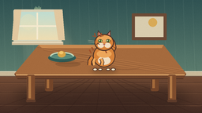
视觉工具实际返回图片 3
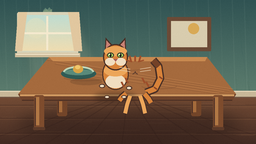
视觉工具实际返回图片 4
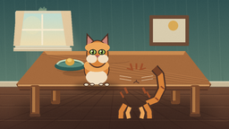
视觉工具实际返回图片 5
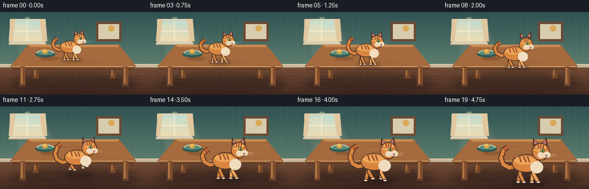
视觉工具实际返回图片 6
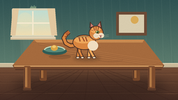
视觉工具实际返回图片 7
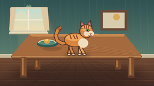
视觉工具实际返回图片 8
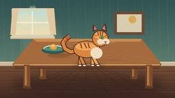
视觉工具实际返回图片 9
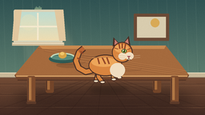
视觉工具实际返回图片 10
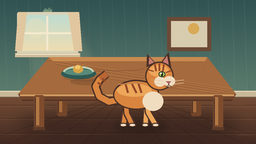
视觉工具实际返回图片 11
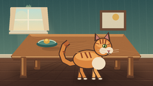
视觉工具实际返回图片 12

保存候选 4 份；完成命令 12 次；可验证图片返回 12 张。原始 API 响应与完整日志保留在本地。